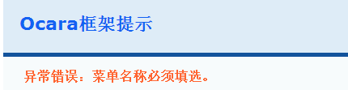

表单验证
表单的验证，是指对用户在表单控件中填选的值进行格式校验。
具体步骤如下：
（1）配置表单验证规则
（2）在表单新建时用model()指定规则。
（3）表单提交后框架自动验证表单，或者手动验证
一、设置表单验证规则
1、配置验证规则
要进行表单验证，首先要进行表单验证规则配置。
（1）配置文件所在目录
配置文件是在resource/conf/model目录中。
这个目录类似于application/model目录，其中的配置文件一般都是默认数据库default的数据表模型配置。而其子目录则是非默认数据库的数据表
模型的字段配置，子目录名是该数据库服务器名称。
（2）验证规则配置
配置表单验证时，要确定好数据库连接目录，默认数据库连接是default，一般直接放在conf/model目录中。
如上第（1）点所述的，其他的数据库连接则需要新建该数据库服务器名称的子目录，这里就以此为例。
实例如下，
如果想配置db_bbs数据库的user表模型的验证规则，假设配置了db_bbs数据库的服务器名称为'bbs'。则先在required/conf/model目中新建bbs子目录。
然后，在其中新建一个配置user.php的配置文件，加入验证配置，如下代码所示：
$CONF['VALIDATE'] = array(
'user_name' => 'notEmpty', //user_name字段，验证规则是不能为空(notEmpty)。
'email' => 'notEmpty, email' //email字段验证规则是两个：不能为空(notEmpty)，必须是email格式。
);
2、验证规则说明
Ocara的验证规则有三种：
（1）普通的验证（common）
可以配置多个验证规则，可以是字符串或数组。
（a）字符串
如果是字符串，则以英文半角逗号“,”分隔。如“notEmpty, email”。
可以带参数，要加上英文半角冒号“:”，参数之间要用英文半角状态下的竖线符号“|”分隔。
如下实例：
$CONF['VALIDATE'] = array(
//用户名：不能为空，5到12个字符，不能含有中文
'user_name' => 'notEmpty, betweenLength:5|12, noneChinese',
//Email：不能为空，必须是email格式，比如；lin@163.com
'email' => 'notEmpty, email'
);
（b）数组
数组方式类似。只是字符串以逗号分隔，而数组则不需要，参数格式一样。
如上例可以改成：
$CONF['VALIDATE'] = array(
//用户名：不能为空，5到12个字符，不能含有中文
'user_name' => array('notEmpty', 'betweenLength:5|12', 'noneChinese'),
//Email：不能为空，必须是email格式，比如；lin@163.com
'email' => array('notEmpty', 'email')
);
（2）正则表达式验证（expression）
正则表达式验证要用expression指定。
如下示例：
$CONF['VALIDATE'] = array(
'email' => array(
//邮箱不能为空，5到30个字符
'common' => 'notEmpty, betweenLength:5|30'
//邮箱必须满足下面正则表达式
'expression' => '/^([0-9A-Za-z\\-_\\.]+)@([0-9a-z]+\\.[a-z]{2,3}(\\.[a-z]{2})?)$/i'
)
);
（3）回调验证（action）
回调验证，一般用于通过业务逻辑验证字段值的合法性。比如：验证用户名是否存在。
回调可以是回调函数、类方法或MVC路由。返回结果如下：
（a）如果验证正确，返回false。
（b）如果验证不正确，需返回错误字符串，或错误数组。
如果是字符串，例如：'用户名已存在'。
如果是错误数组，必须由错误代码和错误提示字符串组成，如：array(1002001, '用户名已存在')。
以下就以回调路由验证用户名是否存在来做例子：
（a）首先新建验证用户名存在的Action动作。
如果是直接在Controller中添加的action方法，代码如下：
class UserController extends Controller
{
//初始化控制器
protected function _control()
{}
//验证用户名是否存在
public function existsusernameAction($field, $value, $index)
{
$userModel = $this->model('\Model\User');
$result = $userModel->existsUserName($value);
//错误时返回字符串
$return = $result ? '用户名已存在' : null;
//或者，错误时返回错误数组
$return = $result ? array(1000123, '用户名已存在') : null;
return $return;
}
}
如果是将Action动作独立成类，代码如下：
class ExistsusernameAction extends UserController
{
public function _action($field, $value, $index)
{
$userModel = $this->model('\Model\User');
$result = $userModel->existsUserName($value);
//错误时返回字符串
$return = $result ? '用户名已存在' : null;
//或者，错误时返回错误数组
$return = $result ? array(1000123, '用户名已存在') : null;
return $return;
}
}
（b）配置验证规则
$CONF['VALIDATE'] = array(
'username' => array(
'common' => 'notEmpty, betweenLength:5|12, noneChinese',
'callback' => '/user/existsusername', //回调验证
),
'email' => array(
'common' => 'notEmpty, betweenLength:5|30'
'expression' => '/^([0-9A-Za-z\\-_\\.]+)@([0-9a-z]+\\.[a-z]{2,3}(\\.[a-z]{2})?)$/i'
)
);
3、使用验证规则
在新建表单时，使用model()方法就可以使用配置好的验证规则。该方法的格式请参考表单生成。
如上例中新建bbs的登录表单时，在login的动作类的_form()方法中指定user验证规则：
class LoginAction extends UserController
{
protected function _action(){}
protected function _form()
{
$this->form('form_bbs_edit')
->init(ocUrl('/bbs/user/login'))
->model('\Model\Bbs\user', 'user');
}
protected function _display(){}
protected function _submit(){}
}
提示：
因为上例中假设指定的是db_bbs数据库的user数据表模型，所以model()的参数是“bbs/user“，如果是默认数据库default， 直接写“user”就行了。
二、验证表单
表单的验证有以下两种方式：
（1）框架自动验证
如果控制器动作是一个独立的Action类，指定了验证规则，框架就会自动验证。
代码如下：
class CreateAction extends ItemController
{
//控制器初始化代码
public function _action()
{}
public function _form()
{
//新建表单
$this->form('form_item_edit')
->init(
ocUrl('/admin/item/edit'),
array(
'class' => 'form-edit',
'onchange' => 'reurn validateForm(this)'
)
)
->upload()
->model('\Model\Item'); //一定在这里指定模型配置
}
public function _display()
{
//这里写页面显示前的代码
}
public function _submit()
{
//框架在前面会自动验证，这里写表单提交后的处理逻辑
}
}
（2）手动验证
如果控制器动作只是控制器类一个方法时，就需要手动验证表单。
具体步骤如下：
（a）生成表单时使用validateForm(false)取消自动验证
（b）表单提交后，使用控制器动作的validator()获取表单验证类FormValidate，使用它的validate()方法进行验证。
代码如下实例：
class ItemController extends Controller
{
//控制器初始化代码
public function _control()
{}
public function createAction()
{
//新建表单
$this->form('form_item_edit')
->init(
ocUrl('/admin/item/edit'),
array(
'class' => 'form-edit',
'onchange' => 'reurn validateForm(this)'
)
)
->validateForm(false) //取消自动验证
->upload()
->model('\Model\Item'); //一定在这里指定模型配置
if ($this->_isPost) {
//手动验证表单
$formObj = $this('form_item_edit');
$formObj->validate($this->validator, Request::getSubmit());
//这里写表单提交后的处理逻辑
} else {
//这里写页面显示前的代码
}
}
}
三、验证出错的处理
1、配置错误提示文本
当表单验证出错，Ocara会抛出验证出错误，比如“用户名不能为空”等等。但其实，如果没有配置字段的提示文本，是不会显示这样的友好提示
的， 而是显示成“username不能为空”，直接提示字段名称，这体验对于用户来说显然是不友好的。所以，我们需要配置一下字段提示文本。
（1）配置文件所在的目录
配置文件是在resource/lang/model目录中。
lang目录其实就是我们的语言目录。字段提示文本要在其子目录model中添加。目录结构与上面所述的配置规则文件目录类似。
（2）配置字段提示文本
如上例中的bbs/user表，我们在model中添加bbs目录，并在bbs目录添加user.php文件，文件内容如下代码：
$LANG = array(
'username' => '用户名',
'email' => '邮箱',
);
2、自定义错误提示页面
如果表单验证出错，应当提示用户。一般显示的是Ocara的提示页面，比如添加菜单时没有填名称，可能会出错，如下截图：

为了提供更友好的界面提示和代码的保密性。我们需要自定义自己的错误提示页面，具体使用到了自定义回调。
（1）回调步骤
先新建好回调方法或函数、路由，然后配置一下即可。
具体配置时写法如下示例：
//回调函数
$CONF['CALLBACK']['form'] = array(
'check_error' => 'showFormValidateError', //表单检测失败时的回调
'generate_token' => '', //表单令牌加密算法的回调
);
//回调MVC路由
$CONF['CALLBACK']['form'] = array(
'check_error' => '/form/validate_error', //表单检测失败时的回调
'generate_token' => '', //表单令牌加密算法的回调
);
//回调方法
$CONF['CALLBACK']['form'] = array(
'check_error' => 'iform:validate_error', //表单检测失败时的回调
'generate_token' => '', //表单令牌加密算法的回调
);
（2）回调参数
回调时，Ocara会传递三个参数：$field, $value, $index。分别表示字段名，字段值和字段值数组索引。
什么是字段值数组索引呢？
字段值数组是用于多选框的。同一个字段如果用多个复选框进行复选的话，那么提交过来的值必然是一个数组，字段验证会自动遍历整个值数组。
这里的$index就是指当前复选框值在这个数组中的索引，起始索引为0。
所以，这个$index一般是在多个同名复选框提交时使用。